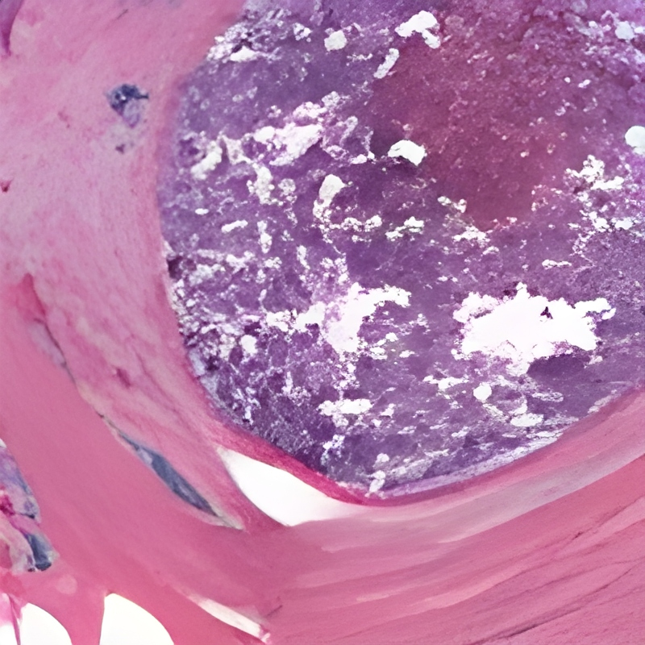

GreenCOD Detection Results
Check out these example results showing GreenCOD's performance.


GreenCOD is a cutting-edge Green AI model designed to detect camouflaged objects on mobile devices, leveraging green technology for efficient performance.
This innovative approach utilizes gradient boosting and pre-trained DNN features, eliminating the need for backpropagation and reducing computational demands.
Authors: Hong-Shuo Chen, Yao Zhu, Suya You, Azad M. Madni, C.-C. Jay Kuo
Try the demoWe introduce GreenCOD, a green method for detecting camouflaged objects, distinct in its avoidance of backpropagation techniques. GreenCOD leverages gradient boosting and deep features extracted from pre-trained Deep Neural Networks (DNNs). Traditional camouflaged object detection (COD) approaches often rely on complex deep neural network architectures, seeking performance improvements through backpropagation-based fine-tuning. However, such methods are typically computationally demanding and exhibit only marginal performance variations across different models. This raises the question of whether effective training can be achieved without backpropagation. Addressing this, our work proposes a new paradigm that utilizes gradient boosting for COD. This approach significantly simplifies the model design, resulting in a system that requires fewer parameters and operations and maintains high performance compared to state-of-the-art deep learning models. Remarkably, our models are trained without backpropagation and achieve the best performance with fewer than 20G Multiply-Accumulate Operations (MACs). This new, more efficient paradigm opens avenues for further exploration in green, backpropagation-free model training.
Check out these example results showing GreenCOD's performance.
GreenCOD can be trained on various datasets for different AI systems. For example, applying it to medical imaging, a challenging task, could be highly beneficial, especially if it can run efficiently on mobile devices.
In earthquake rescue operations, GreenCOD can detect camouflaged objects like trapped victims. Running efficiently on mobile devices, it provides real-time data to first responders, improving response times. Integrating with drones, it offers comprehensive situational awareness, enhancing coordinated rescue efforts and potentially saving lives.

If you use GreenCOD in your research, please cite the following paper:
@misc{chen2024greencod,
title={GreenCOD: A Green Camouflaged Object Detection Method},
author={Hong-Shuo Chen and Yao Zhu and Suya You and Azad M. Madni and C. -C. Jay Kuo},
year={2024},
eprint={2405.16144},
archivePrefix={arXiv},
primaryClass={cs.CV}
}
![ARL Logo]()